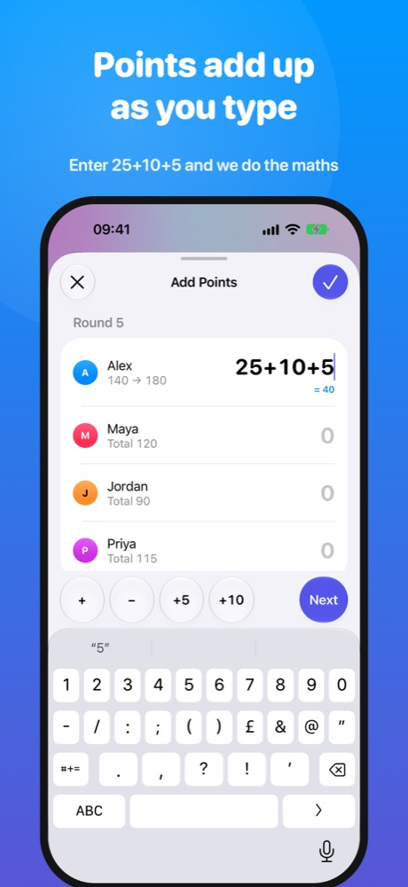

Simple scoring
All the points, none of the mental maths.
Use Wins mode for quick rounds or Points mode for games where everyone scores. Type a sum such as 10+5+3 and Victory Circle adds it for you.
- Round history and one-tap undo
- Optional target scores
- Big controls for passing the phone around